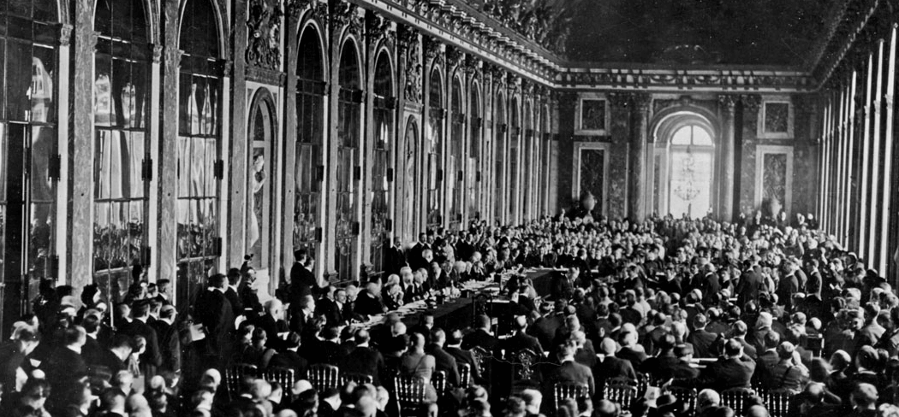
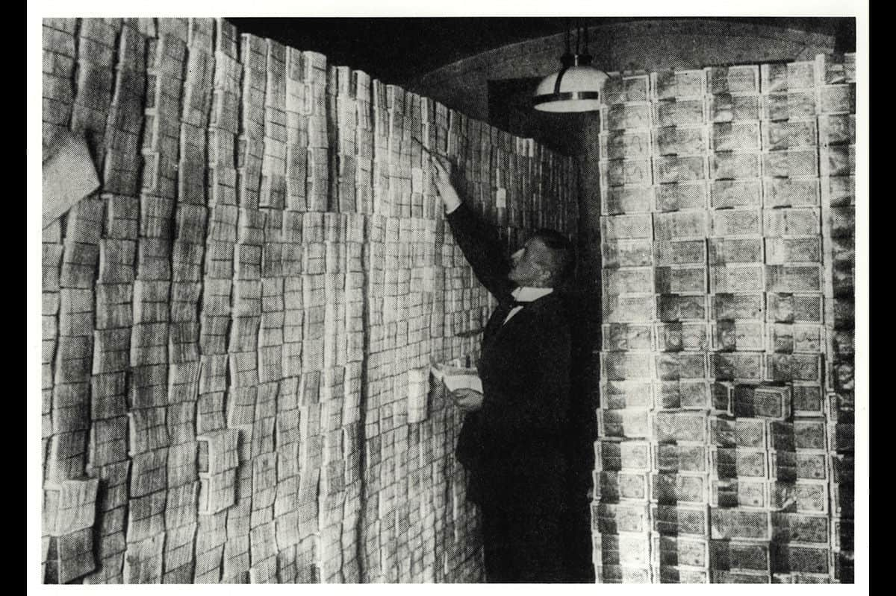
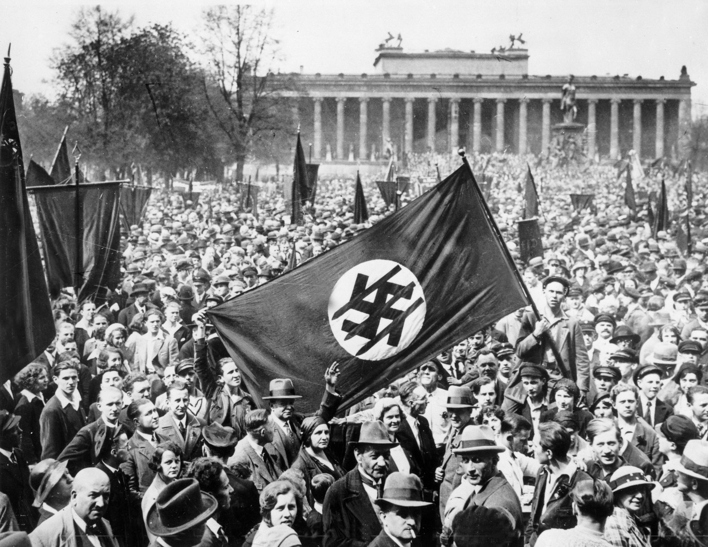

1938
La expansión comienza
Alemania anexó Austria. La persecución dejó de estar limitada a las fronteras alemanas y alcanzó inmediatamente a nuevas comunidades.
El Holocausto
Entre 1933 y 1945, el régimen nazi asesinó sistemáticamente a seis millones de judíos y a millones de otras personas. Esta es la historia de cómo ocurrió, y por qué recordarla sigue importando.
Introducción
El Holocausto (1933-1945) fue la persecución y el asesinato sistemático de aproximadamente seis millones de judíos europeos, organizado y auspiciado por el régimen alemán nazi y sus colaboradores. Además de perpetrar el Holocausto, la Alemania nazi también persiguió y asesinó a millones de otras víctimas.
El Museo Conmemorativo del Holocausto de Estados Unidos define los años del Holocausto de 1933 a 1945. La era del Holocausto comenzó en 1933, cuando Adolf Hitler y el Partido Nazi llegaron al poder en Alemania. Terminó en 1945, cuando las potencias aliadas derrotaron a la Alemania nazi en la Segunda Guerra Mundial. El Holocausto también se denomina a veces “Shoah”, palabra hebrea que significa “catástrofe”.
Una Alemania derrotada
La derrota de 1918 marcó el comienzo de una etapa de profundas transformaciones para Alemania. La crisis económica, las tensiones políticas y el descontento social fueron moldeando un escenario que, pocos años después, facilitaría el ascenso del nazismo. A continuación, recorré los principales acontecimientos que explican cómo se desarrolló ese proceso entre 1918 y 1933.
En noviembre de 1918, ante la imposibilidad de continuar la guerra, Alemania firmó el armisticio con los Aliados. El acuerdo obligó al país a retirar sus tropas, ceder los territorios ocupados, entregar armamento y aceptar la ocupación de Renania, marcando el inicio de una profunda crisis política y económica.

Los oficiales aliados posan frente a un vagón de tren, en el cual el delegado alemán firmó el armisticio. Compiègne, Francia, 11 de noviembre de 1918.
Foto de dominio público
En 1919, el Tratado de Versalles responsabilizó a Alemania por el inicio de la Primera Guerra Mundial y le impuso fuertes reparaciones económicas, pérdidas territoriales y restricciones militares. La humillación provocada por estas condiciones alimentó el descontento social y contribuyó al ascenso del nazismo en los años siguientes.

Salón de los Espejos, firma del Tratado de Versalles, 28 de junio de 1919.
En 1923, la imposibilidad de pagar las reparaciones de guerra y la ocupación del Ruhr desencadenaron una hiperinflación sin precedentes. El gobierno imprimió grandes cantidades de dinero, la moneda se desplomó y los precios se dispararon: una barra de pan llegó a costar 200.000 millones de marcos. La crisis dejó a millones de alemanes en la pobreza y aumentó el descontento con la República de Weimar.

Para hacer frente a la crisis económica, el gobierno imprimió más dinero. Como consecuencia, el dinero perdió valor. Aquí, un banquero cuenta fajos de billetes
Tras el crac de Wall Street de 1929, Estados Unidos retiró sus préstamos e inversiones de Alemania. La economía alemana volvió a colapsar, el desempleo aumentó drásticamente y el descontento social creó un escenario favorable para el crecimiento del nazismo.

Multitud reunida en la intersección de Wall Street con Broad Street, al enterarse de la quiebra de la bolsa en 1929.
En julio de 1932, el NSDAP alcanza su techo electoral: 37,2% de los votos, la primera fuerza en el Reichstag — pero sin mayoría absoluta. En noviembre, con el desempleo en descenso, retrocede al 33%. Hindenburg, que desconfía de Hitler, se resiste a nombrarlo canciller.

Una reunión de un partido opositor al NSDAP, "Frente de Hierro" en el parque Lustgarten. Berlín, marzo de 1932.
Colección de fotos: Archiv für Kunst und Geschichte, Berlín.
Los partidos conservadores, sin apoyo suficiente propio, presionan a Hindenburg para nombrar canciller a Hitler, esperando usarlo para formar mayoría y controlar su programa — una subestimación que el tiempo demostraría grave. El 30 de enero de 1933, Hindenburg cede. "Parece un sueño: la Wilhelmstraße es nuestra", escribe Goebbels en su diario. Hitler no fue elegido por el pueblo alemán, pero llegó al poder de forma legítima.

Adolf Hitler saluda a una multitud jubilosa desde la Cancillería del Reich en Berlín, quienes celebran su nombramiento como Canciller de Alemania.
Colección: Bundesarchiv, 146-1972-026-11/Foto: R. Sennecke.
La derrota militar, las sanciones del Tratado de Versalles y las sucesivas crisis económicas erosionaron la confianza de gran parte de la sociedad alemana en las instituciones democráticas. En ese contexto de incertidumbre y descontento, el Partido Nazi encontró el terreno propicio para ganar apoyo y acceder al poder.
El Holocausto no comenzó con los campos de exterminio. Antes hubo años de crisis, propaganda y decisiones políticas que transformaron gradualmente a la sociedad alemana. Comprender ese proceso es fundamental para entender lo que ocurrió después.
La República de Weimar se derrumba
A fines de la década de 1920, la República de Weimar parecía haber alcanzado cierta estabilidad. Sin embargo, el impacto de la Gran Depresión alteró rápidamente ese equilibrio: mientras la producción industrial caía, el desempleo crecía hasta alcanzar niveles inéditos.
La crisis no produjo automáticamente el ascenso del nazismo, pero sí debilitó la confianza en las instituciones democráticas y amplió el espacio para los partidos que prometían soluciones radicales.
El ascenso del Partido Nazi
El líder del Partido Nazi, Adolf Hitler, se convirtió en canciller de Alemania el 30 de enero de 1933. En los meses siguientes, los nazis transformaron Alemania de una democracia en una dictadura. El ascenso al poder de Hitler y los nazis no fue inevitable. Fue el resultado de muchos factores, incluyendo el momento oportuno, las circunstancias y la pura suerte.
Fuente: Museo del Holocausto de Buenos Aires — "Ascenso del nazismo"
El crecimiento electoral del Partido Nazi coincidió con el agravamiento de la crisis económica. Entre 1928 y 1932, el aumento del desempleo estuvo acompañado por una expansión extraordinaria del voto nazi.
Marzo de 1933 introduce una diferencia clave: el desempleo ya había comenzado a descender, pero el apoyo nazi siguió aumentando. Para entonces, la violencia, la propaganda y el control progresivo del Estado también condicionaban la competencia electoral.
La construcción del enemigo
El Holocausto no comenzó en los campos de exterminio. Mucho antes de las deportaciones y los asesinatos masivos, el régimen nazi impulsó leyes, restricciones y actos de violencia destinados a apartar progresivamente a la población judía de la vida pública.
La persecución comenzó en 1933, con la llegada de Adolf Hitler al poder, y se volvió cada vez más radical. A lo largo de la era nazi, el gobierno alemán y sus colaboradores privaron al pueblo judío de sus derechos, lo excluyeron de la sociedad y lo sometieron a una violencia creciente.
Entre 1933 y 1939, la persecución contra la población judía no avanzó de una sola vez: se construyó mediante una sucesión de leyes, restricciones, mecanismos de identificación y actos de violencia. La línea de tiempo muestra cómo esa exclusión fue pasando del discurso estatal al despojo legal y la persecución abierta.
Pasá el cursor por cada imagen para ver el detalle.
Antes de exterminar personas, fue necesario excluirlas de la sociedad. La discriminación sistemática sentó las bases para una persecución que, años más tarde, alcanzaría una escala sin precedentes.
Cuando el 30 de enero de 1933 Adolf Hitler es proclamado canciller del Reich, culmina de manera provisional en Alemania un largo período de agitación política. La influencia de su partido ―el NSDAP― y su ideario extremista aumentan considerablemente. Ya no hay lugar para quienes piensan distinto: desde un principio, los opositores al régimen sufren intimidaciones y persecuciones y son enviados a campos de concentración. Por eso, pronto muchos disidentes políticos y culturales abandonan el país, sin que la condición de judío constituya la línea divisoria primaria. Entre estos primeros emigrantes o refugiados se encuentran muchos escritores, periodistas y artistas. Existe una diferencia entre emigrar y refugiarse, aunque es difícil explicar dónde radica la separación entre ambos.
Entre 1933 y 1937, un total de 130.000 judíos abandonaron la Alemania nacionalsocialista. Muchos se dirigieron a Sudáfrica, Palestina y Latinoamérica. También hubo un flujo hacia Europa del Este, formado en particular por familias que originalmente procedían de esa región. Sin embargo, varios miles permanecieron en Europa septentrional y occidental.
❝ Creo que, hoy por hoy, todos los judíos alemanes buscan por todo el mundo y ya no pueden entrar.❞
Fuente: Anne Frank House — "La (im)posibilidad de huir (1933–1942)"
Un destino dominante
Al ordenar los 25 principales destinos, aparece un patrón claro: uno de cada cinco refugiados se estableció en Estados Unidos.
Europa bajo el nazismo
El nazismo, al expandirse, convirtió la persecución en un crimen continental.
La expansión territorial comenzó con la anexión de Austria.
Las fronteras actuales se utilizan como aproximación cartográfica. Checoslovaquia y Yugoslavia se representan mediante sus Estados sucesores.
1938
Alemania anexó Austria. La persecución dejó de estar limitada a las fronteras alemanas y alcanzó inmediatamente a nuevas comunidades.
1939
La ocupación de Checoslovaquia y la invasión de Polonia transformaron la expansión territorial en una guerra continental.
1940
Dinamarca, Noruega, Países Bajos, Bélgica, Luxemburgo y gran parte de Francia quedaron bajo control alemán.
1941
Yugoslavia, Grecia, los países bálticos y amplias regiones de Bielorrusia y Ucrania quedaron sometidos a la ocupación.
1942
Con la ocupación completa de Francia, el dominio nazi alcanzó su máxima amplitud. El territorio ya estaba controlado; lo siguiente fue organizar la persecución y el exterminio a escala continental.
La industrialización del exterminio
Entre 1933 y 1945, la Alemania nazi operó una red de decenas de miles de campos y centros de detención diseñados para el encarcelamiento, la explotación y el asesinato masivo. Este sistema, que evolucionó desde campos de detención política improvisados hasta sofisticados centros de exterminio, fue fundamental para el mantenimiento del poder del régimen y la ejecución de la “solución final al problema judío”.
Millones de personas sufrieron condiciones de extrema violencia, tortura y privación. Aunque comúnmente se utiliza el término “campo de concentración” para describir toda la red, el sistema era complejo y diversificado, con diferentes autoridades administrativas y propósitos específicos que iban desde el trabajo forzado hasta el genocidio sistemático.
Las víctimas
La dimensión de la persecución
Cada punto representa aproximadamente 20.000 personas. Las cifras fueron reconstruidas a partir de documentos nazis, testimonios y datos demográficos: no existe un único registro que reúna todas las muertes.
Dos dimensiones de los crímenes nazis
El Holocausto fue el genocidio de seis millones de judíos, asesinados sistemáticamente por la Alemania nazi, sus aliados y colaboradores. El régimen también persiguió y asesinó a millones de personas de otros grupos, aunque no todos fueron atacados por las mismas razones ni de la misma manera.
El asesinato de los judíos europeos
Aproximadamente 2,7 millones de judíos fueron asesinados en centros de exterminio y cerca de 2 millones en fusilamientos masivos. Cientos de miles más murieron en ghettos y campos, debido a privaciones deliberadas, enfermedades, trabajos forzados, brutalidad y otros actos de violencia.
Crímenes más allá del genocidio de los judíos
Los nazis, sus aliados y colaboradores también asesinaron a alrededor de 3,3 millones de prisioneros de guerra soviéticos y 1,8 millones de polacos no judíos, además de cientos de miles de romaníes, civiles serbios y personas con discapacidad. Cada grupo fue perseguido bajo razones y políticas diferentes.
De las cifras a las vidas

El gráfico permite dimensionar la magnitud de los crímenes, pero ninguna cifra alcanza para representar por completo lo que fue destruido. Cada punto reúne miles de vidas singulares: personas con familias, amistades, trabajos, costumbres, creencias y proyectos. Antes de convertirse en víctimas, formaban parte de comunidades diversas y de una vida cotidiana que la persecución nazi buscó desintegrar.
El régimen nazi redujo a millones de personas a categorías, registros y números. Recordarlas implica recorrer el camino contrario: mirar más allá de las estadísticas y devolverles una identidad, una historia y un lugar en la memoria. Las fotografías, los nombres y los testimonios permiten acercarse a aquello que los datos, por sí solos, no pueden contar.
“Cada punto representa 20.000 personas.
Pero ninguna vida puede reducirse a un punto.”
0
víctimas judías en seis añosUn nombre por segundo. Día y noche. Aun así, tardarías más de dos meses en decirlos todos.
Seis millones de judíos fueron asesinados durante el Holocausto. Una cifra aproximadamente equivalente a toda la población actual de Dinamarca.
Cada punto representa 20.000 personas.
Desaparecieron vidas, familias, comunidades e historias individuales. Detrás de cada punto había una persona con un nombre, un pasado y un futuro.
La ubicación de los puntos sobre el mapa es ilustrativa.
LA GEOGRAFÍA DE LA PÉRDIDA
Comparar seis millones de víctimas con la población de Dinamarca permite dimensionar el total. Sin embargo, esa pérdida no se distribuyó de la misma manera en toda Europa.
Al observar las estimaciones por país o territorio de residencia antes de la guerra, Polonia y la Unión Soviética concentran las mayores cifras absolutas entre los casos seleccionados. Cada barra vuelve más concreta una parte de ese total: comunidades, familias e historias que fueron destruidas.
Las cifras corresponden a estimaciones históricas y a fronteras territoriales de la época. Para los países presentados mediante un rango, se utilizó el valor medio.
El gráfico no reemplaza la cifra de seis millones: la descompone. Permite pasar de un número difícil de imaginar a los territorios concretos donde esa ausencia dejó sus marcas.
Después del Holocausto
El Holocausto no fue el producto de un solo líder ni de un único acontecimiento. Fue el resultado de crisis económicas, decisiones políticas, discursos de odio, burocracias eficientes y la indiferencia de millones de personas. Comprender cómo ocurrió es una herramienta para reconocer las condiciones que podrían permitir que vuelva a ocurrir.